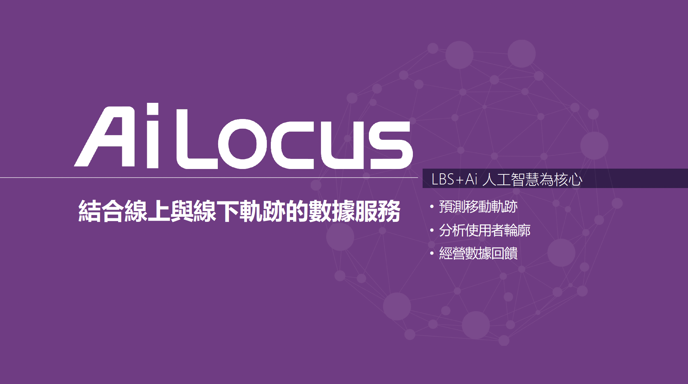
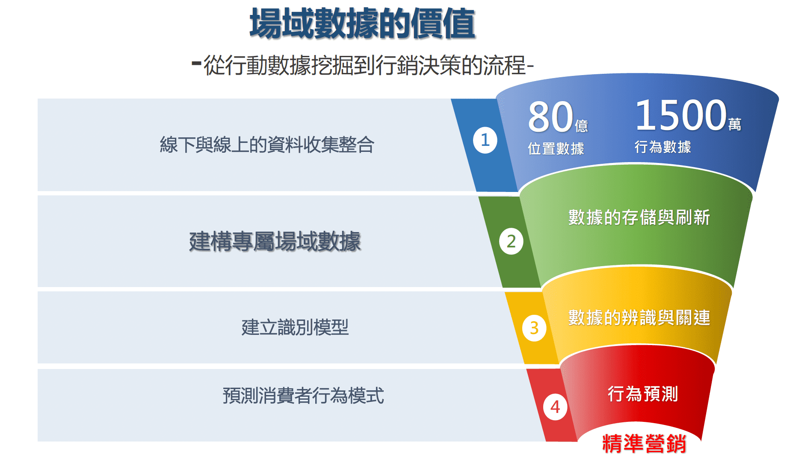
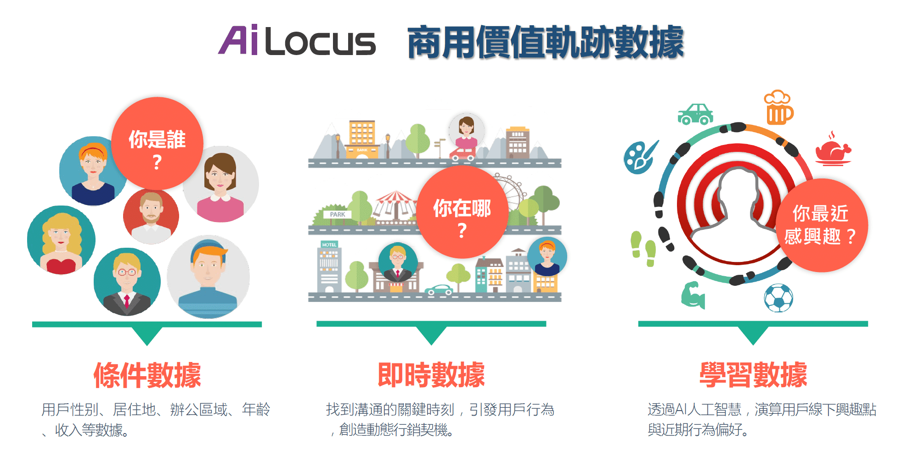
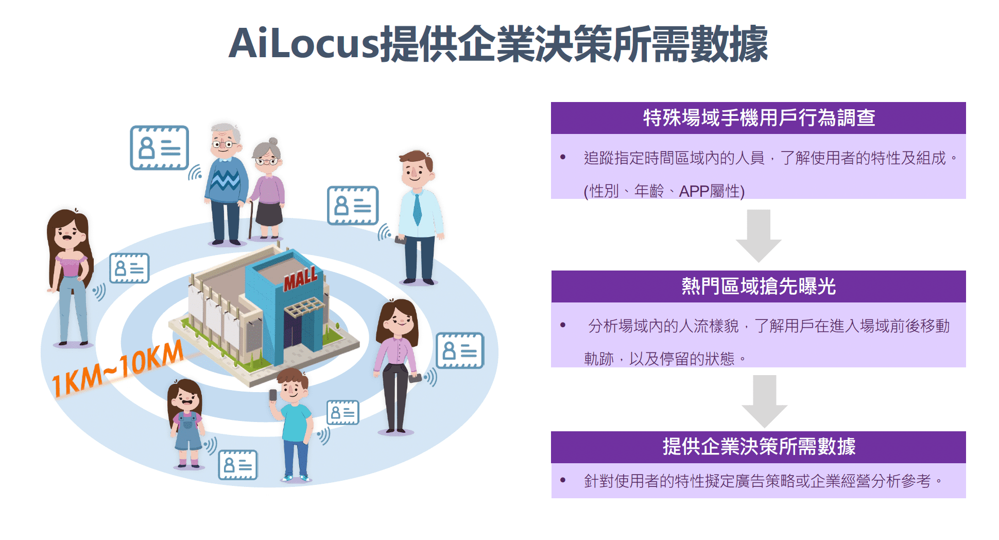
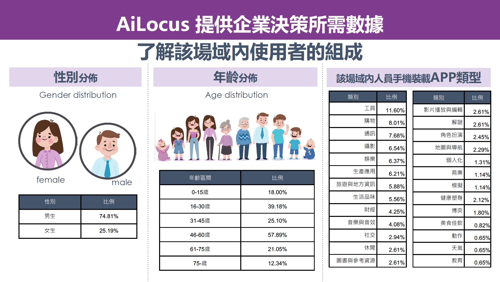
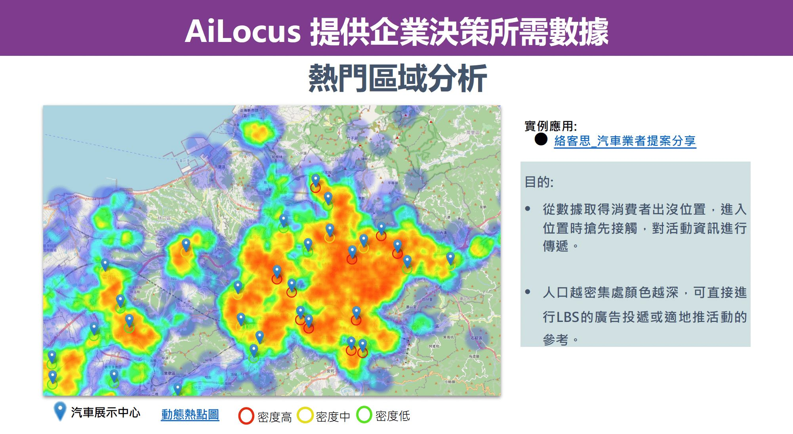

AI × 位置大數據
洞察行動網路客戶
思維動機與行為軌跡
AiLocus 是 iFLocus 的核心數據技術平台，結合大數據與 AI 運算，深度分析手機用戶的位置數據與線下場域軌跡。
透過 AiLocus，品牌可以真正了解消費者在哪裡、什麼時候出現、偏好哪些場域，進而制定最精準的行銷策略。
立即諮詢
AiLocus 是 iFLocus 的核心數據技術平台，結合大數據與 AI 運算，深度分析手機用戶的位置數據與線下場域軌跡。
透過 AiLocus，品牌可以真正了解消費者在哪裡、什麼時候出現、偏好哪些場域，進而制定最精準的行銷策略。
立即諮詢LBS + AI 人工智慧為核心，結合線上與線下軌跡的數據服務

追蹤並分析消費者的日常場域移動軌跡，識別高頻造訪地點、消費習慣與生活圈範圍。
運用機器學習演算法，將海量用戶數據自動分群，建立精準的消費者輪廓與行為標籤。
AI 模型持續從每次廣告活動中學習，不斷優化分群精準度與預測準確率。
從行動數據挖掘到行銷決策的流程

80 億位置數據 + 1500 萬行為數據
數據的存儲與刷新
數據的辨識與關連
→ 達成精準營銷
三大數據維度疊加，完整描繪消費者輪廓

用戶性別、居住地、辦公區域、年齡、收入等基本輪廓數據，建立精準受眾畫像。
找到適地的關鍵時刻，引發用戶行為，創造動態行銷契機。
透過 AI 人工智慧，演算用戶線下興趣點與近期行為動向，精準預測消費意圖。
從場域行為調查、區域曝光到完整的商業洞察報告



根據指定時間區域內的人員，分析使用者特性及組成(性別、年齡、APP 屬性等)。
分析場域內的人流變化，了解用戶在進入場域前後移動軌跡，以及停留的狀態。
針對使用者的特性擬定廣告策略，企業經營分析參考，協助開店選址、產品定位等決策。
多元數據應用，為品牌決策提供強力支援
透過場域人流數據與消費者輪廓分析，協助品牌選擇最具商機的展店地點。
結合 AiLocus 數據，為場域推播廣告提供最精準的受眾鎖定依據，提升 CTR 與投資報酬率。
提供特定商圈、場域的消費者行為研究報告，為品牌行銷策略制定提供數據支撐。
關於 AiLocus 位置大數據，您最想知道的答案
AiLocus 是絡客思行銷科技兩大主要服務之一，結合大數據與 AI 運算分析手機用戶的位置數據與線下場域軌跡。不同於 Facebook/Google 廣告依靠線上行為數據，AiLocus 能掌握消費者的實體場域移動軌跡，提供更真實的消費意圖預測與精準受眾鎖定。
AiLocus 處理的所有位置數據均經過去識別化（匿名化）處理，不與個人身份資訊連結。數據收集透過合作 APP 以符合法規的方式取得用戶授權，完全符合台灣個人資料保護法的規範要求。
主要包含：場域軌跡分析（消費者日常移動軌跡）、AI 智慧分群（自動建立消費者輪廓標籤）、消費意圖預測（預測最佳轉換時機）、競品場域監控（競品人流分析）、效益歸因分析（廣告到到店的完整路徑追蹤）。
AiLocus 可觸及超過 1,000 萬台行動裝置，覆蓋 iOS 與 Android 全平台。台灣市場單次最大推送量達 300 萬用戶，覆蓋率居業界領先地位。